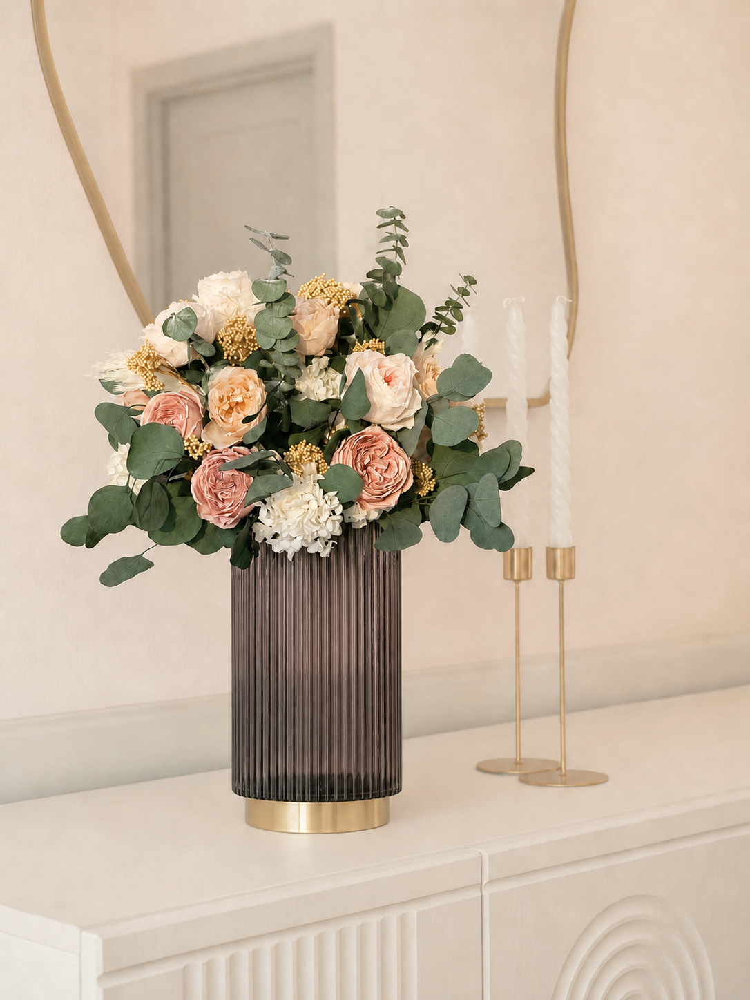
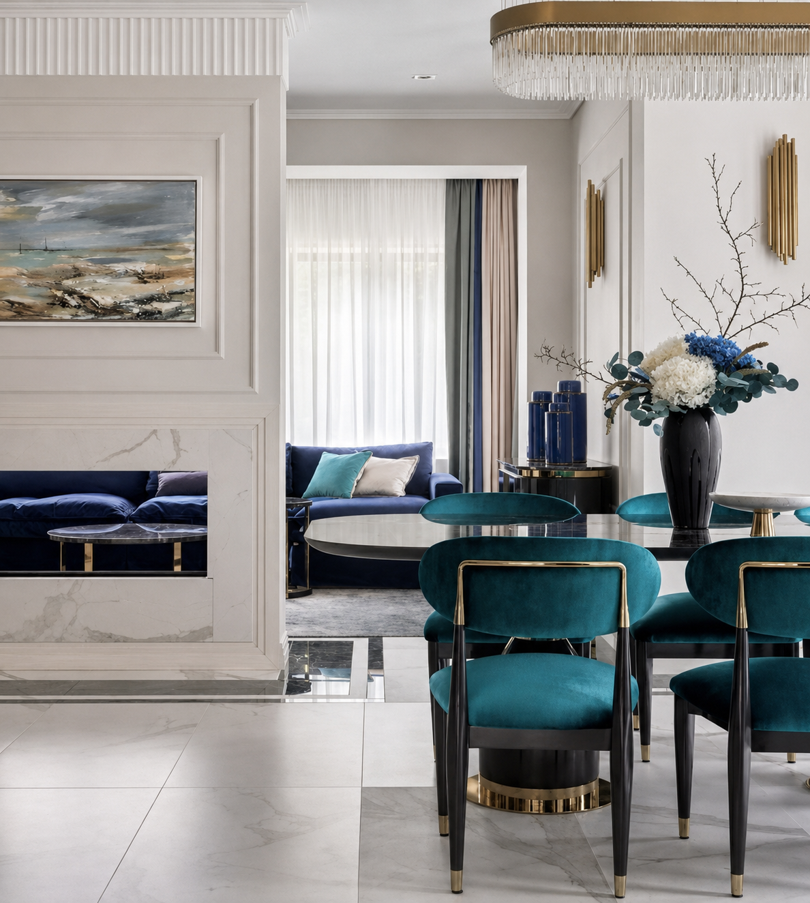
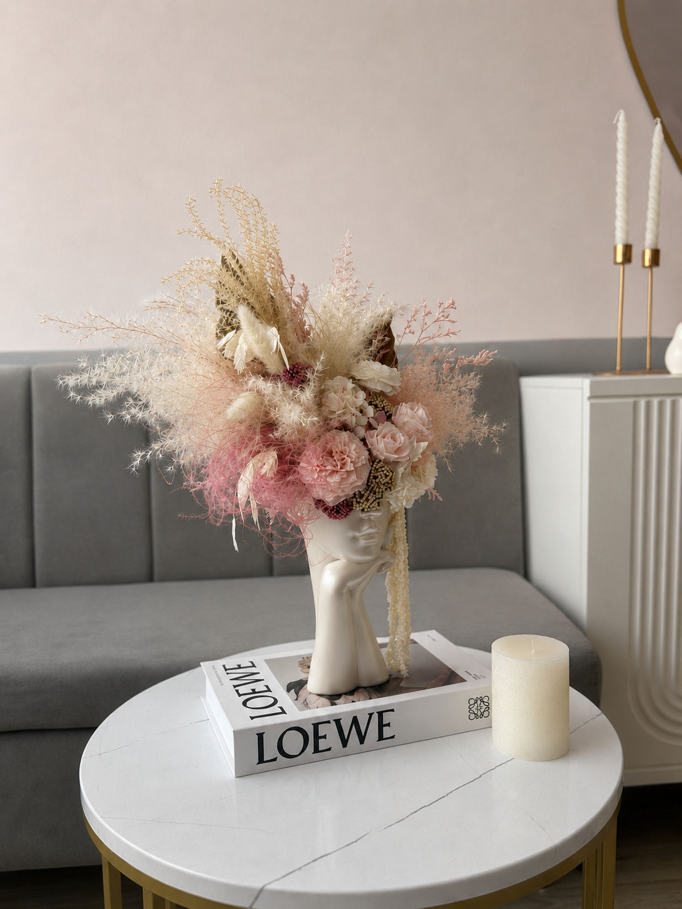
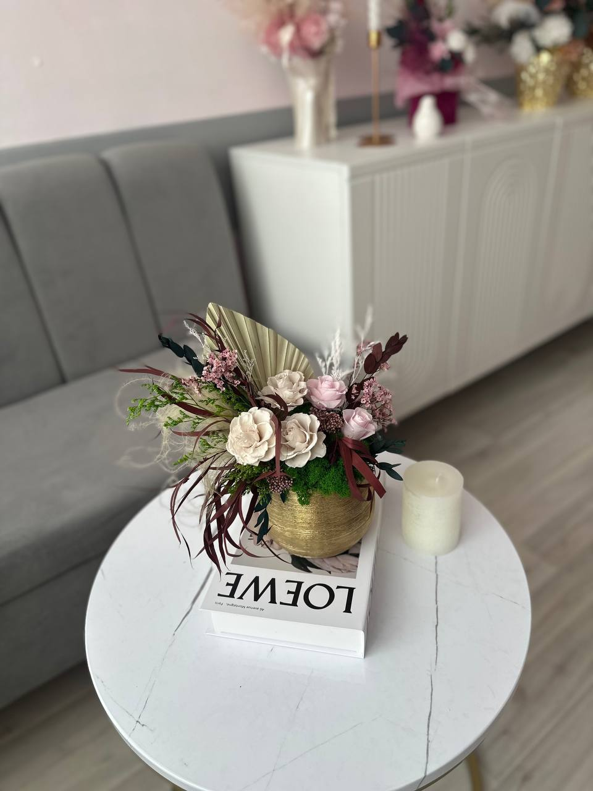
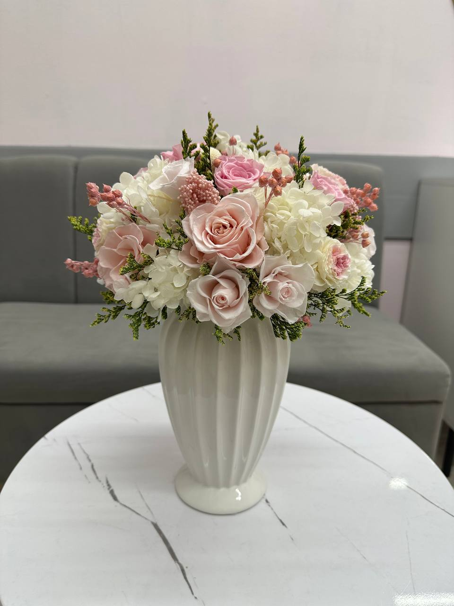
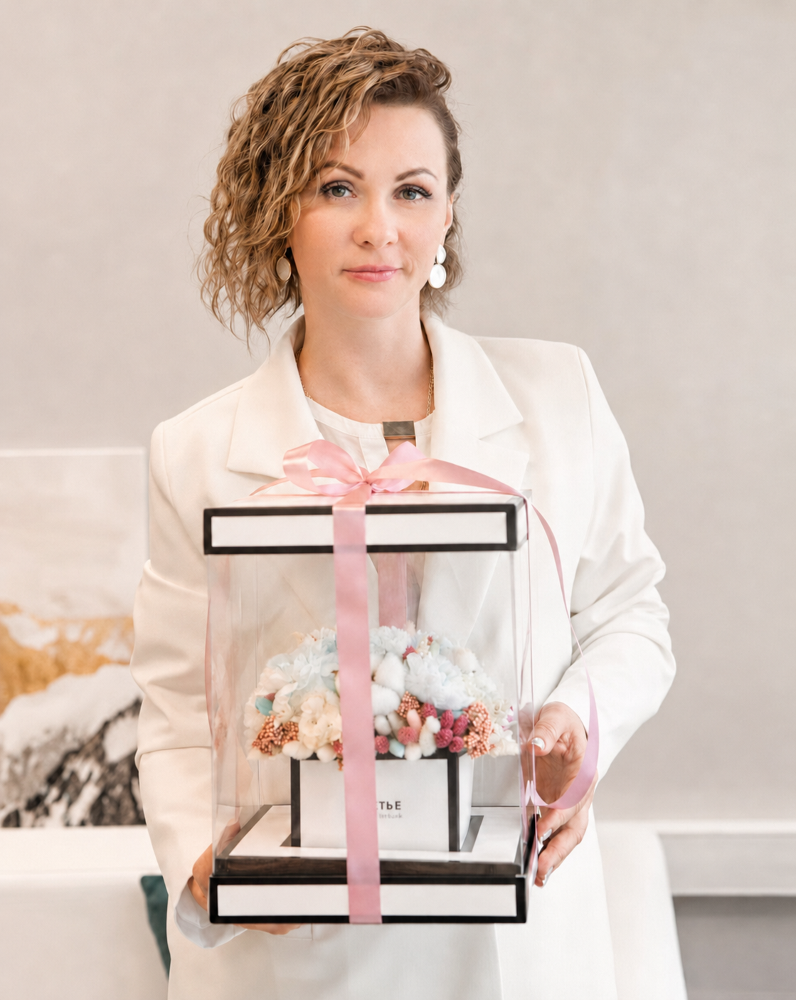

Для дома
Композиции для домашних интерьеров.
Студия дизайнерской флористики
Создаём интерьерные композиции из стабилизированных цветов для дома, бизнеса и особенных событий.

Интерьеры · События · Бизнес-пространства
Стабилизированные цветы — это натуральные цветы, обработанные по специальной технологии. Они сохраняют красоту, свежесть и естественный внешний вид от 3 до 5 лет — без полива и ухода.
О студии
Мы создаём композиции, которые не выглядят декором “на время”, а становятся частью архитектуры и стиля пространства.
Композиции подбираются индивидуально под стиль и масштаб пространства.

Направления
Композиции для домашних интерьеров.
Салоны красоты и спа-центры, рестораны и бутики, офисы и переговорные комнаты.
Композиции для свадебных церемоний и праздников.
Преимущества
Композиции сохраняют свежесть и внешний вид от 3 до 5 лет без ухода.
Натуральные цветы, стабилизированные специальной технологией.
Не нуждаются в поливе и специальном уходе.
Без регулярной покупки свежих цветов.
Работы
Композиции подбираются индивидуально под стиль и масштаб пространства.



Katrin Dekor
Я создаю интерьерные композиции из стабилизированных цветов, которые подчёркивают стиль и индивидуальность вашего пространства.

Екатерина · дизайнер-флорист